this is a paragraph
paragraph number two
Fight On! 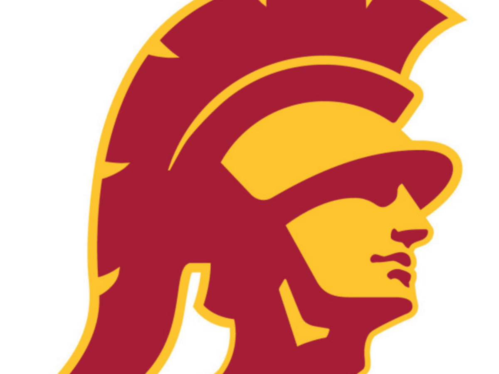9/2/2022 - This week we played around with Tinker CAD and learned the basics. We use it for 3d modeling. We did a fun challenge on Tinker CAD. I made a pizza oven.
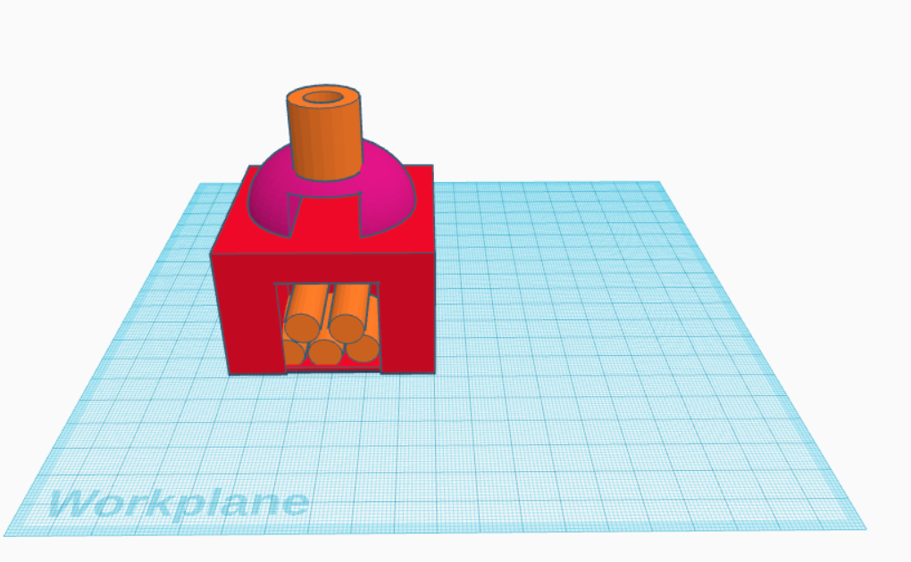9/9/2022 - We did some more with Tinker CAD. Also, we created a Tinker CAD for our Rude Goldberg project. We had to make sure all the dimensions correct for the project.
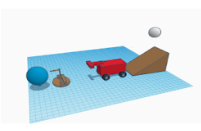9/16/2022 - This week we started our Rube Goldberg project. We also did a challenge where we had to make a boat by only using paper and see how long the boat could float. Regaurding the project, we cut out cardboard and made a ramp.
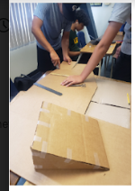9/23/2022 - This week we did more improvements on the Goldberg project. We had added more parts to the car. We also tested our project and it worked the first time. That was a big accomplishment.
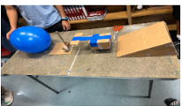9/30/2022 - This week we had disected an old GUSD chromebook laptop. We had to identify the different components and take apart, then put back together the computer. We also had to fill in and color a model of the inside of the laptop. It was quite enjoyable.
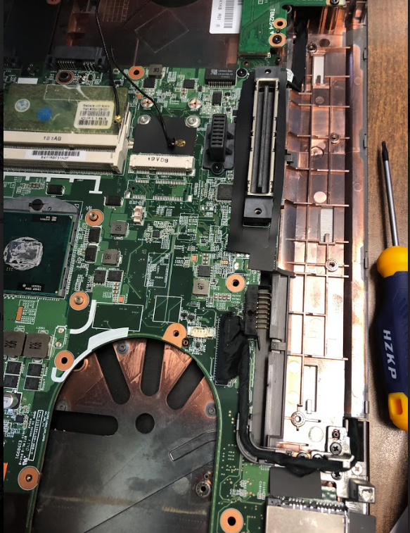 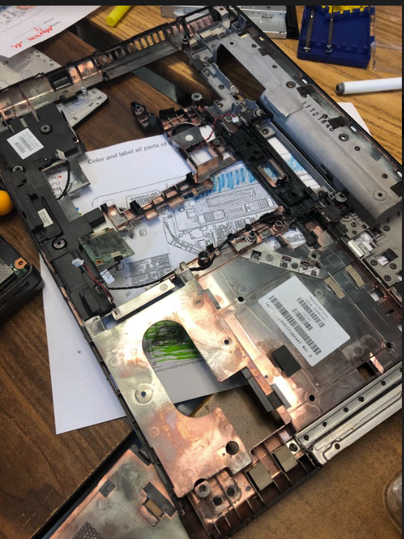10/7/2022 - This week we made prosthetic animal limbs on TinkerCAD. I made a thing to help turtles with missing limbs that way they can walk. They sit on the flat part and use the limbs they have to push themselves to move.
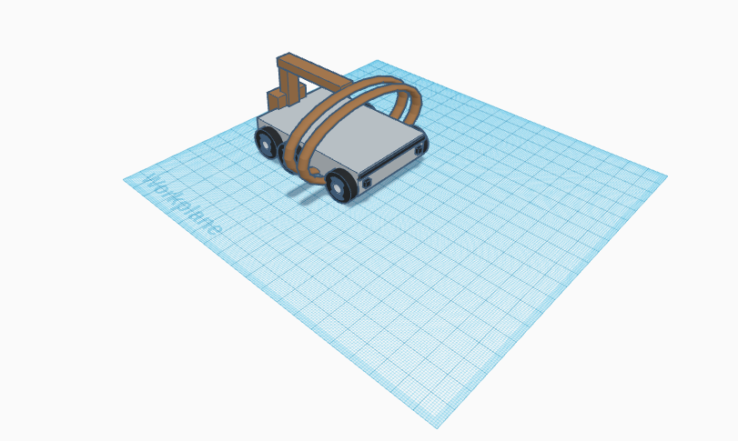10/14/2022 - This week we had learned about areospace engineering.We also learned about aeronautical engineering. We also started creating a project on areospace engineering where we have to create a bottle rocket.
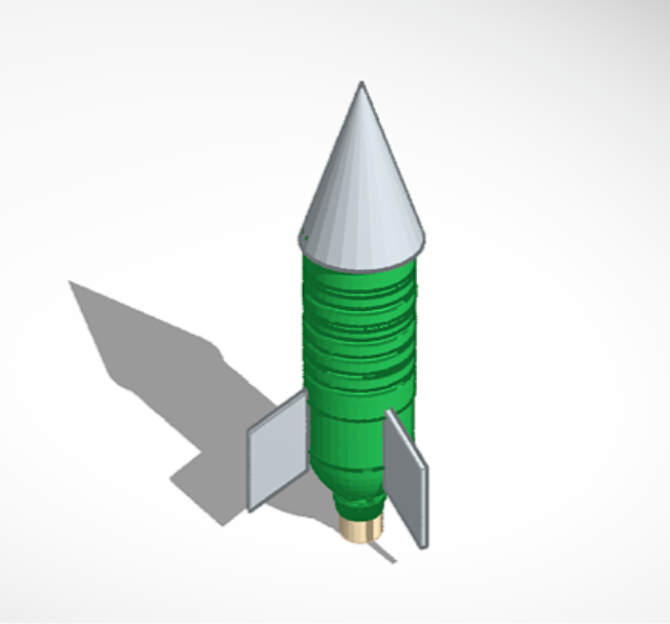10/21/2022 - This week we constructed bottle rocket to launch on the field outside. Our rocket launch was not succussful. When we launched it, the rocket just tiped forward and ignited when it was on the ground nose pointed down. We came to the conclusion that our rockets front part was too heavy which was why it didn't work.
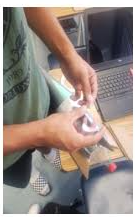10/27/2022 - This week we tried to make a filter to clean dirty water and make it clean. We used a bottle, filled it with cotton at the tip and big rocks on top. Then in the middle, we added sand with smaller rock pebbels. We then filled the bottle with dirty water and when clean water came out, that's when we knew it was working really well.
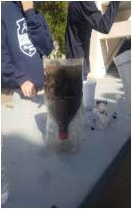11/4/2022 - This week we started learning about electrical engineering. We used TinkerCAD to create a model electrical circuit. We tested out and connected wire to turn on a light bulb. The activity was at first a little difficult but once I understood the concepts, it was fairly easy.
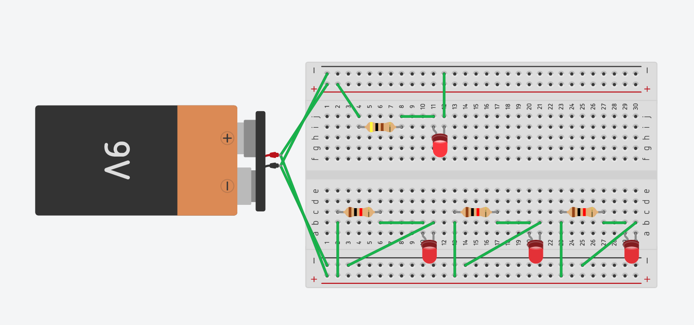11/10/2022 - This week we experimented with actual circuits and turned on light bulbs. We used different this to help us. We used a type of measuring tool that helped us measure Voltage and the amount of resistance. It was a little confusing for me at first, however I quickly got a grasp on things. In the end, it was really fun.
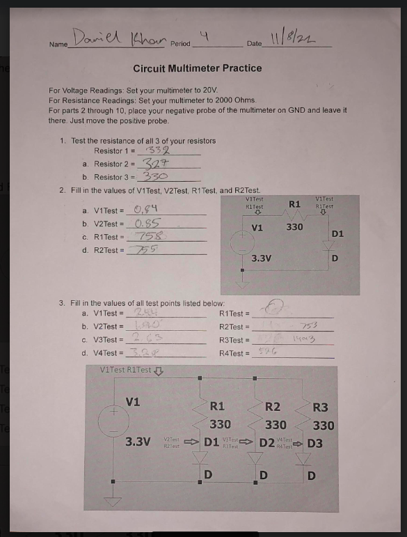